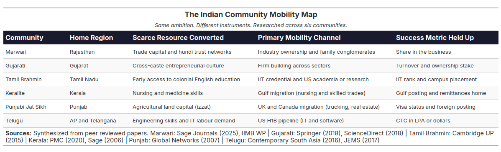
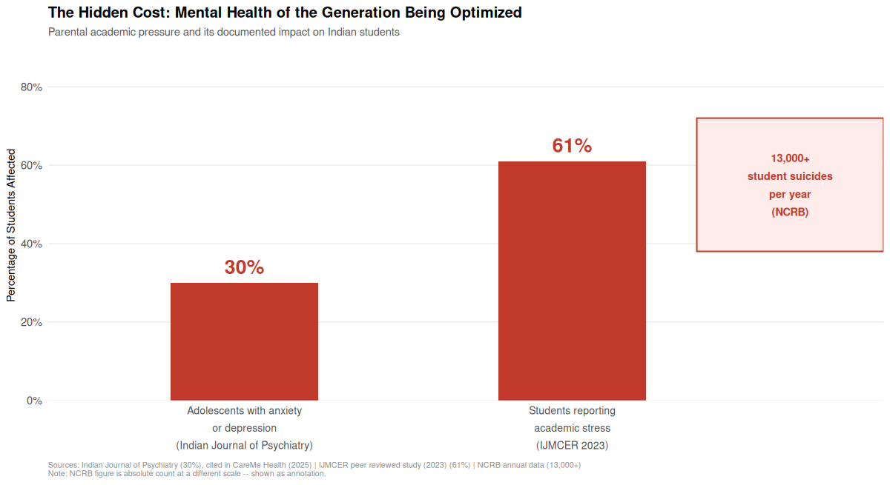
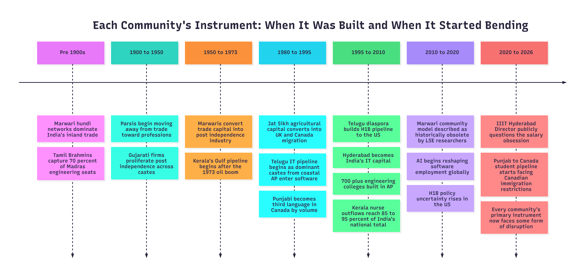

A few weeks ago, someone asked me a pointed question. “Why do Telugu parents only measure their child in CTC?” I answered confidently. I said it was specific to the Telugu community and their IT pipeline to the United States. I was informed that there is a different question in every community. The Marwari parent asks “how much equity do you own?” The Gujarati parent asks “what is your turnover?” The Tamil Brahmin parent asks “which IIT?” The Keralite parent asks “where is your Gulf posting?” The Punjabi Jat Sikh parent asks “have you gone abroad?” Each community has its own instrument and its own question, but the underlying obsession is the same measuring the child’s success through a well worked metric that is visible and comparable to the community at large.
Every major Indian community read the scarce resources available to it, identified the highest leverage pathway, and built an entire generational mythology around that one pathway. Some built it around trade. Some around migration. Some around credentials. Some around land converted to professional capital. The instruments are different. The underlying drive is identical.
The Bhagavad Gita in Chapter 3, Verse 27 says
prakṛiteḥ kriyamāṇāni guṇaiḥ karmāṇi sarvaśhaḥ
ahankāra-vimūḍhātmā kartāham iti manyate
Each community believes its particular pathway to success is the result of its unique culture or intelligence. Let us explore the article with that assumption in mind, in which I will explore two things. First, what each major Indian community actually optimized for, based on the research evidence. Second, what was won and what was quietly lost in this optimization, for the parents and for the people they raised.
PART ONE: THE MOBILITY MAP

The Marwaris: From Moneylenders to Industrial Owners
If you want to understand how a community converts a single scarce resource into lasting structural power, study the Marwaris.
A peer reviewed article published in Sage Journals (2025), titled “The Marwaris: Tracing the Rise and Growth of the Trading Communities from Marwar”, documents how merchants from the Marwar region of Rajasthan began as moneylenders and financiers in the Mughal era, built an informal banking system called hundi that connected Rajputana to Bengal and Bihar, and by the end of World War One had controlled much of India’s inland trade.
Source: Sage Journals, 2025
Post independence, the conversion of trading capital into industrial ownership was decisive. A working paper from IIMB found that 44% of directors and owners in the top Indian firms belong to three communities together: Marwari, Gujarati and Parsi, communities that together represent less than 6% of India’s population.
Source: IIMB Working Paper
A peer reviewed paper in Tactful Management Research Journal documented the specific mechanism, the Marwari community maintained informal trust networks that allowed capital to move between community members faster and cheaper than any formal banking system could. The Birlas, Bajajs, Mittals, Goenkas, Piramals were not outliers. They were expressions of a community strategy that had been refined over three centuries.
The instrument the Marwari parent held up for their child was never a salary slip. It was ownership. The question was never “what is your CTC?”. It was “where is your share in the business?”
The Gujaratis: Entrepreneurship as Cultural Operating System
The Gujarati case is different from the Marwari case in one important way. The Marwari mobility story was driven by a specific caste formation. The Gujarati story cut across caste lines more broadly.
A peer reviewed paper published in the Journal of Global Entrepreneurship Research (Springer, 2018), titled “Familial Legacies: A Study on Gujarati Women and Family Entrepreneurship”, found that Gujaratis across all castes and religious backgrounds, including Hindus, Parsis, Jains and Marwaris domiciled in Gujarat, share a unified entrepreneurial orientation. The paper notes:
“The major communities of Gujarat, other than the majority Hindu religion, include the Parsees, Marwaris and Jains. In the rest of India, these religious communities do not necessarily engage in business. Hence, the understanding is that Gujaratis, irrespective of their religious beliefs, become entrepreneurs.”
Source: Springer, Journal of Global Entrepreneurship Research, 2018
A separate ScienceDirect paper titled “Entrepreneurial Communities and Family Enterprises of India” documented that Gujaratis of all castes started a host of firms in the post independence period, establishing the community as one of the most broadly entrepreneurially active in India.
Source: ScienceDirect
The instrument the Gujarati parent held up was: build something you own. The success metric was not salary. It was whether the child could run a venture and eventually hand it forward to the next generation. This is why the Gujarati diaspora in the UK, East Africa and the US built communities around trade and small business ownership, not around IT employment.
The Tamil Brahmins: Meritocracy as Caste Capital
The Tamil Brahmin community engineered perhaps the most sophisticated mobility strategy of any Indian group in the 20th century. They converted the credential, specifically the engineering degree and later the IIT brand, into a form of intergenerational caste capital.
A peer reviewed paper published in Comparative Studies in Society and History (Cambridge University Press), titled “Making Merit: The Indian Institutes of Technology and the Social Life of Caste”, is the definitive academic work on this. The author argues:
“The IIT graduate’s status depends on the transformation of privilege into merit, or the conversion of caste capital into modern capital.”
Source: Cambridge University Press, CSSH
Open Magazine documented the historical root: by the 1920s, Tamil Brahmins had filled over 70% of seats in regional engineering institutions in the Madras Presidency, despite being barely 3% of the regional population. When regional reservations threatened this dominance, Tamil Brahmins were among the first to frame merit itself as a caste claim and the IITs as their natural institution.
Source: Open Magazine
The instrument the Tamil Brahmin parent held up was not the salary but the entrance rank. Which IIT? Which branch? Which campus placement? The CTC mattered, but it was downstream of the credential. The credential was the identity.
The Punjabi Jat Sikhs: Land, Izzat and the Western Migration
The Punjabi Jat Sikh community built its mobility strategy on agricultural capital converted first into western migration and then into real estate, trucking and trade in the UK and Canada.
A peer reviewed paper in Global Networks (Taylor and Francis), titled “Migration, Development and Inequality: Eastern Punjabi Transnationalism”, found that the relative wealth of the Jat Sikh caste group had partly enabled them to mobilise the resources necessary to dominate migration from Punjab to western societies including the UK. The paper introduced the concept of izzat, the community honour framework:
“High izzat, formerly asserted by Jat Sikhs via the ownership and control of agricultural land, but now through western migration, partly enabling caste dominance and social mobility.”
Research on Punjab to Canada migration found that as of 2022, 2,26,450 Canadian student visas were approved for Indian students and Punjab students constitute a dominant share. The study found among communities it was the Jat Sikhs who topped the chart of migrant households. According to the 2016 Canadian Census, after English and French, Punjabi is the third most spoken language in Canada with over 7,00,000 speakers.
Source: IRJMETS, 2024
The instrument the Punjabi Jat Sikh parent held up was the visa and the foreign posting. The success metric was whether the child had “gone abroad” and was sending money home.
The Telugu Community: The IT Pipeline and the H1B Dream
The Telugu community, specifically dominant caste groups from coastal Andhra like the Kammas and Kapus, built its generational mobility strategy around a very specific pipeline engineering degree, Hyderabad IT job, H1B visa, US settlement.
A peer reviewed paper in Contemporary South Asia (Taylor and Francis, 2016) documented what researchers call a distinct regional social imaginary in coastal Andhra:
“A pervasive social imaginary emerged in coastal Andhra that directly equates an engineering degree, a software job and migration to the US with economic success and social prestige.”
The scale of infrastructure built around this single channel was extraordinary. The same research documented over 700 engineering colleges in Andhra Pradesh with 3,00,000 seats. A second peer reviewed paper in the Journal of Ethnic and Migration Studies (Taylor and Francis, 2017), titled “Caste, Kinship and the Realisation of the American Dream: High Skilled Telugu Migrants in the USA”, showed that migration pathways from coastal Andhra to the US are sustained through networks of kinship, caste and endogamous transnational marriage alliances.
Source: Journal of Ethnic and Migration Studies, Taylor and Francis, 2017
The instrument the Telugu parent held up was the CTC and the visa status. The question “Ela undi CTC?” was not cultural shallowness. It was the community’s most visible and comparable measure of whether the pipeline had delivered.
When you look at this map, the first thing that should strike you is this that every community was playing the same game. Every parent in every state was doing the same thing. They were identifying the highest leverage, lowest barrier and most visible pathway available to their child and betting everything on that one instrument. The CTC question and the visa question and the “how much equity do you own” question are all the same question expressed through different community vocabularies.
So where does the real difference lie?
PART TWO: WHAT WAS WON AND WHAT WAS LOST
What Was Lost: The Suppression of the Outlier
Every community strategy, by definition, optimises for one channel and devalues every other channel. This is where the cost begins.
A peer reviewed paper published in Harvard Business School on caste and entrepreneurship in India found that the concentration of entrepreneurial capital in historically merchant communities, specifically Vaishya, Jain, Marwari and Gujarati castes, creates structural exclusion for those outside those networks. The ability of the merchant caste to create wealth was found to be “still overwhelming” and the rise of non-merchant castes as a new business elite was described as “extremely rare.”
What this means in practice is the following. The child in a Marwari family who wants to be a musician, the son in a Telugu family who wants to start a company instead of taking an MNC job, the daughter in a Gujarati family who wants to pursue research science, the Jat Sikh boy who wants to stay in Punjab and farm differently rather than migrate: each of these people is not just making a personal choice. They are departing from the community’s generationally reinforced mobility script. And the community, not just the parents, enforces that script through comparison, marriage eligibility, social standing and the withdrawal of support.
The instrument each community chose became the only instrument. The success metric each community chose became the only metric. And the people who did not fit were not failures. They were simply the ones the community had no vocabulary to celebrate.
What Was Lost: The Mental Health of the Generation Being Optimized
The second cost is now measurable and can no longer be described as anecdotal.
A study published in the Indian Journal of Psychiatry found that over 30% of Indian adolescents suffer from anxiety and depression linked to academic pressure. The National Crime Records Bureau (NCRB) reports more than 13,000 student suicides every year in India, with academic stress named as a significant contributing factor.
A peer reviewed study published in the International Journal of Indian Psychology (2024) found that when students perceive parental expectations as exceeding their own self expectations, the outcome is emotional vulnerability, academic burnout and alienation from the very parents who are meant to be their support system.
Source: IJIP, 2024
A peer reviewed study in IJMCER (2023) found that 61% of students in the study sample reported academic stress, with parental expectation identified as one of the primary contributing factors.
Source: IJMCER, 2023

Notice that these numbers cut across all communities. The Marwari child who does not want to enter the family business, the Tamil Brahmin child who cannot clear JEE, the Keralite child who does not want to become a nurse, the Punjabi Jat child who does not want to migrate: all of them are paying the same psychological cost of a community template that was designed for economic survival and not for individual flourishing.
What Was Lost: The Communities Themselves Are Now Obsolete Instruments
The third and perhaps most structurally serious cost is that the conditions that made each community strategy rational no longer exist in the same form.
A 2014 essay published by LSE South Asia noted that the Marwari business community as historians understood it has become obsolete as a business resource. The maturity of capital and information markets made the informal trust network that powered Marwari commerce redundant. The Parsi community, which had been one of India’s most powerful business communities, started moving away from trade and industry as early as 1900 and became primarily a community engaged in the professions and creative fields.
Source: LSE South Asia Blog, 2014
For the Telugu IT pipeline specifically, the disruption is already visible. In early 2026, Prof. S.K. Shukla, Director of IIIT Hyderabad, the most prestigious technical institution in the Telugu speaking world, publicly stated:
“Every year, headlines showcasing graduates from top engineering institutes landing high salary packages have caused remunerations to become the primary metric by which people measure success. This obsession on high salaries may distort the country’s long term prospects.”
Source: IIIT Hyderabad, 2026
AI is reshaping software employment. The H1B pathway faces increasing policy uncertainty. The 700 plus engineering colleges in Andhra Pradesh are not producing graduates for a market that increasingly does not need them in the volume it once did. The instrument is breaking while the community mythology around it remains entirely intact.

The question each community now faces is identical even if the surface looks different. When the door that your entire generational strategy was built around starts to close, what do you teach the next child?
Conclusion: The Instrument Was Never the Identity
The Bhagavad Gita in Chapter 2, Verse 47 says
karmaṇy-evādhikāras te mā phaleṣhu kadāchana
mā karma-phala-hetur bhūr mā te saṅgo ’stvakarmaṇi
Every community built its strategy around a particular fruit. The CTC. The ownership stake. The IIT rank. The Gulf posting. The UK visa. The community then told its children that pursuing that fruit was their duty.
But the fruit was never the duty. The duty was to find a path to dignity. The communities found one path and mistook it for the only path.
What parents in every Indian community actually wanted was never the number. It was the security behind the number. The freedom from the fear their own parents lived with. The ability to look at their children and know that they would not have to borrow from a landlord, sell gold for school fees, or leave home because home could not sustain them.
That fear is legitimate. That motivation is honourable. But a legitimate fear does not automatically produce a wise strategy. And a strategy that worked for one generation does not automatically work for the next.
The communities that built these mobility pipelines did something extraordinary. They lifted millions of families out of structural poverty and exclusion through the sheer force of collective aspiration. The question for this generation of parents, in every state and in every community, is whether the same collective intelligence that built these pipelines can now be turned toward building a wider vocabulary.
Instead sit with the child alongside with equal respect for the child’s aspirations and understanding that the world they are entering is not the same world their parents entered, can we build a community culture that celebrates multiple pathways to dignity instead of one? Can we build a community culture that celebrates the child who does not fit the template as much as the child who does? Can we build a community culture that understands that the instrument was never the identity?
Key Sources and Further Reading
Parashar, A. (2025). The Marwaris: Tracing the Rise and Growth of the Trading Communities from Marwar. Sage Journals. Link
IIMB Working Paper. Who Controls the Indian Economy: The Role of Families and Communities. Link
Springer. (2018). Familial Legacies: A Study on Gujarati Women and Family Entrepreneurship. Journal of Global Entrepreneurship Research. Link
ScienceDirect. (2018). Entrepreneurial Communities and Family Enterprises of India. Link
Subramanian, A. (2015). Making Merit: The Indian Institutes of Technology and the Social Life of Caste. Comparative Studies in Society and History, Cambridge University Press. Link
Open Magazine. (2015). An Anatomy of the Caste Culture at IIT Madras. Link
PMC, NCBI. (2020). Revisiting Kerala’s Gulf Connection: Half a Century of Emigration, Remittances and Their Macroeconomic Impact, 1972 to 2020. Link
Percot, M. (2006). Indian Nurses in the Gulf: Two Generations of Female Migration. Journal of Ethnic and Migration Studies, Sage. Link
Bristol University Press Digital. (2022). Gendered Mobility and Nurse Migration from India to the Gulf. Link
Taylor, S., Singh, M. and Booth, D. (2007). Migration, Development and Inequality: Eastern Punjabi Transnationalism. Global Networks. Link
IRJMETS. (2024). The Great Punjab Migration to Canada. Link
Nambiar, S. (2016). Engineering Equality? Education and Im/mobility in Coastal Andhra Pradesh. Contemporary South Asia, 24(3). Taylor and Francis. Link
Irudaya Rajan, S. and Varghese, V.J. (2017). Caste, Kinship and the Realisation of the American Dream: High Skilled Telugu Migrants in the USA. Journal of Ethnic and Migration Studies. Taylor and Francis. Link
Korea Science. (2021). A Study on the Caste of Top 50 Indian Companies Founders. Asia Pacific Journal of Business. Link
LSE South Asia Blog. (2014). The Marwari Business Community Is Now a Part of History. Link
Prof. S.K. Shukla, Director, IIIT Hyderabad. (2026). Salary Obsession Distorts Engineering Education. Link
Indian Journal of Psychiatry and NCRB data, cited in CareMe Health. (2025). Link
IJIP. (2024). Perceived Parental Expectations, Academic Self Concept and Academic Burnout. Link
IJMCER. (2023). Parental Pressure and Academic Stress Among Adolescents. Link
International Journal of Social Impact. (2018). The Dynamics of Caste Identity and Social Mobility in Contemporary India. Link